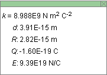
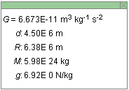
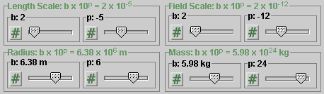
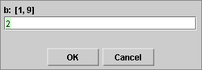

The applet runs in one of two modes. In one mode it displays the electric field due to a sphere of uniform charge density, in the other the gravitational field due to a sphere of uniform mass density. You can choose the mode by selecting one of the two radio buttons pictured above.
The image at the beginning of the Help file shows the applet in the Gravitational Mode. In this mode, the source object is in yellow. In the Electric mode, the source object is in red if the source charge is positive and in blue if the source charge is negative.


When the Data button is selected, a Data box is displayed. The box can be dragged to a convenient place. The contents of the Data box depend on the mode. The following data are displayed in the two modes.
Electric Mode

- k: universal constant in Coulomb's Law
- d: distance of the field point from the center of the source
- R: radius of the source
- Q: total charge distributed uniformly throughout the source
- E: magnitude of the electric field at the chosen field point
Gravitational Mode

- k: universal constant in Newton's Law of Gravitation
- d: distance of the field point from the center of the source
- R: radius of the source
- M: total mass distributed uniformly throughout the source
- g: magnitude of the gravitational field at the chosen field point

Resets the applet to its default setting.
RESET will not change the mode. The applet's default setting is the Gravitational mode. However, if you are in the Electric mode and click RESET, the applet will remain in the Electric mode but will get reset to the default setting for that mode. If you then switch to the Gravitational mode, you will have to click RESET once more to obtain the default setting for that mode.
There are eight sliders, or four slider pairs, shown in the following image. Each slider pair lets you set the value of a quantity in the format b×10p. One slider in the pair lets you set the value of b, the other one the value of p.

Clicking on a slider to the left or right of the slider tab allows fine adjustment of the slider setting.
Clicking on the Input Dialog button  of a slider will open a dialog for entering an
exact value. The dialog for one of the b-sliders is
illustrated below. The range in which values can be
entered, from 1 to 9 in this case, is indicated above the
data entry field.
of a slider will open a dialog for entering an
exact value. The dialog for one of the b-sliders is
illustrated below. The range in which values can be
entered, from 1 to 9 in this case, is indicated above the
data entry field.

The four slider pairs in the control panel allow you to adjust the values of the following quantities.
- Length Scale. This slider sets the scale for displaying the radius of the source object and the distance of the field point from the center of the source object, in the range from 1×10-20 to 9×1020.
- Field Scale. This slider sets the scale for the length of the arrow representing the field vector, in the range from 1×10-40 to 9×1040.
- Radius. This slider lets you vary the radius of the source object, in the range from 1.00×10-20 m to 9.99×1020 m.
-
Mass (Gravitational Mode). This slider lets you
vary the mass of the source object, in the range from
1.00×10-40 kg to
9.99×1040 kg.
Charge (Electric Mode). This slider lets you vary the charge of the source, in the range from -9.99×10-40 C to 9.99×1040 C.
You can move the source object by clicking inside the object and dragging.
You can move the field point by clicking on the field, at the tail end of the field vector, and dragging.
The field point can be either outside or inside the source object.